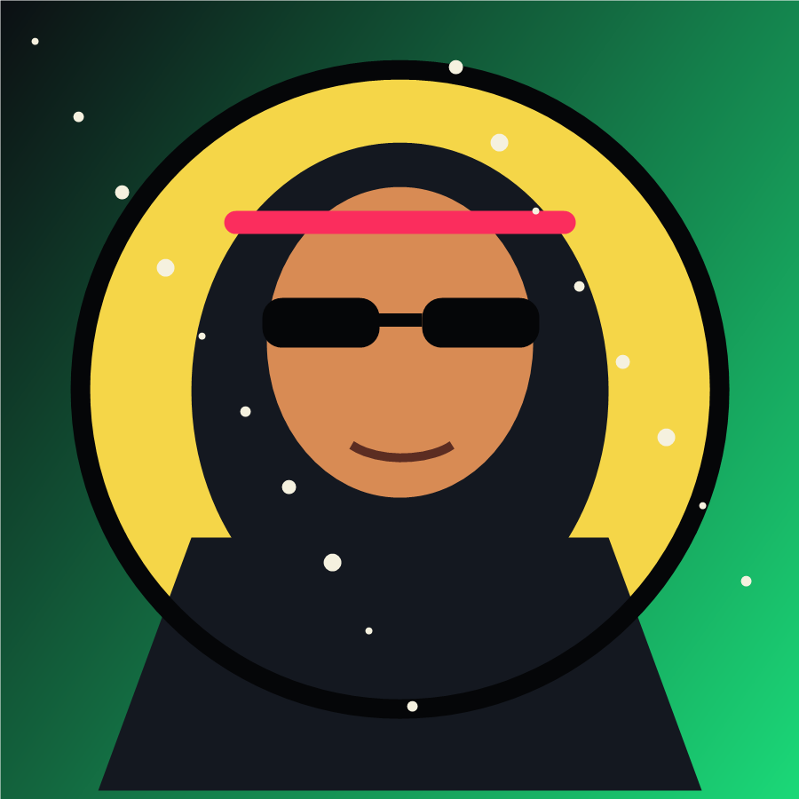

About Fauzi
Fauzi
Pria yang kesehariannya ngoding, hobi SAMP Pawn development, dan fokus bantu kebutuhan scripting server SAMP.

Profil singkat
Belum punya apa-apa, tapi fokus ngoding dan bangun skill.
Nama gue Fauzi. Hobi gue SAMP Pawn development, game favorit gue SAMP, dan keseharian gue ngoding. Website ini dibuat untuk nunjukin jasa developer SAMP dengan sistem paket harian dan mingguan.
Status saat ini: belum punya apa-apa. Jadi fokus gue simpel: bantu ngerjain kebutuhan server, kumpulin pengalaman, dan bikin hasil kerja yang jelas buat client.
Cara kerja
Alur order yang jelas.
Kasih scope
Jelaskan bug, fitur, sistem, atau bagian gamemode yang perlu dikerjain.
Pilih paket
Pakai paket harian buat task kecil, atau mingguan buat kerja yang lebih panjang.
Mulai ngoding
Fauzi kerjain script sesuai scope, lalu update progress sesuai kesepakatan.